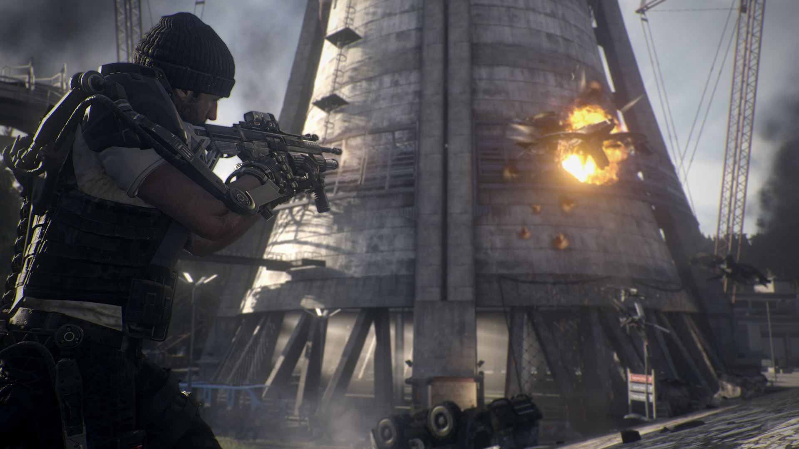

Nuclear Power Station Attack
Soon afterwards, the KVA launches a massive surprise attack on nuclear power stations all over the world. Mitchell, along with a massive Atlas quick-reaction force, is sent to retake a power plant in Seattle, Washington. After successfully reaching the control room, Gideon attempts to get the reactor levels under control but is too late, as the reactor has already gone near critical. Gideon refuses to leave until ordered by Atlas Command, who orders all forces to evacuate the area. Although their team member Carter is killed, Mitchell, Joker and Gideon manage to escape, but the reactor becomes critical and causes the facility to collapse. Soon, more nuclear plants around the world become critical, with 50,000 people dead as a result of the KVA attacks.